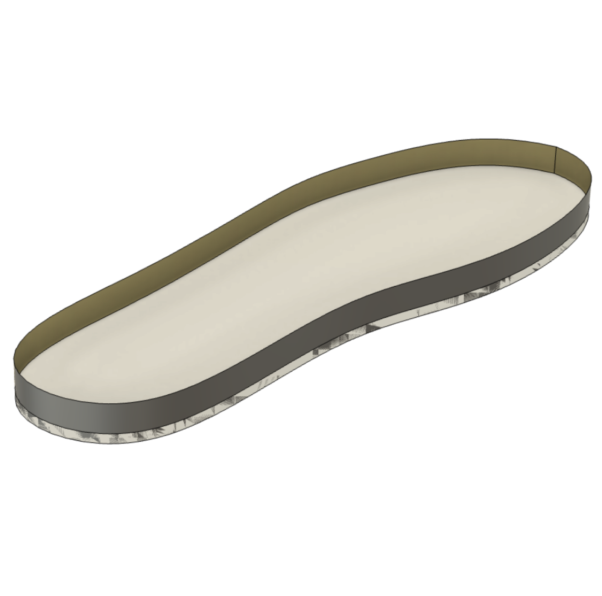
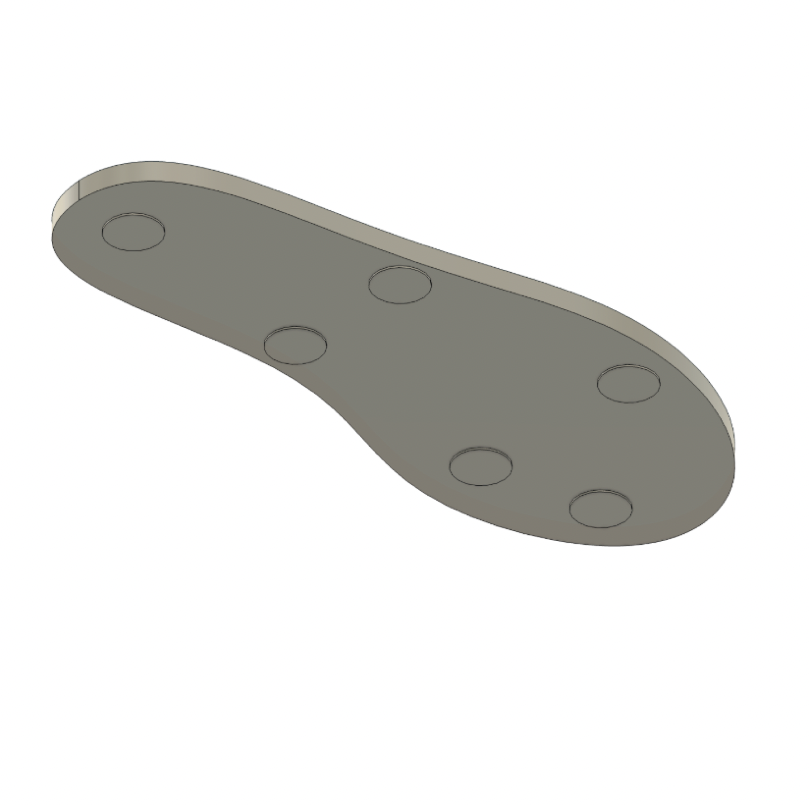
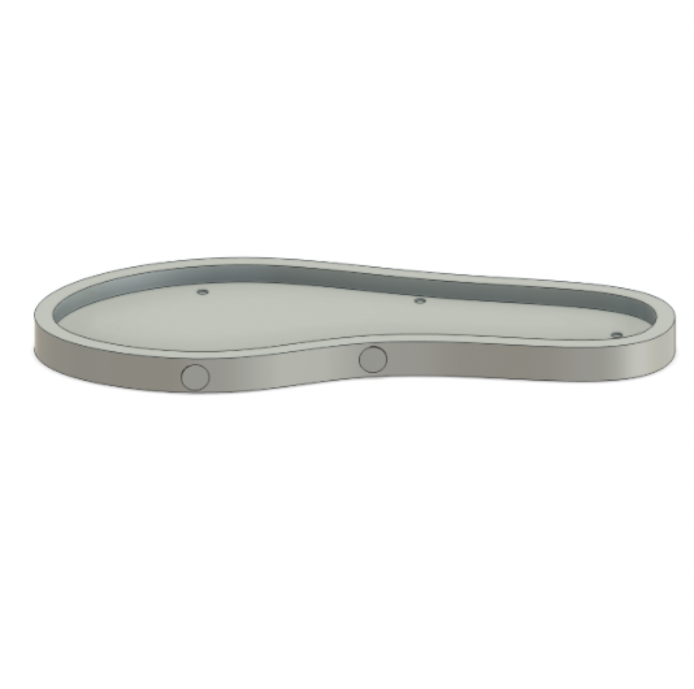
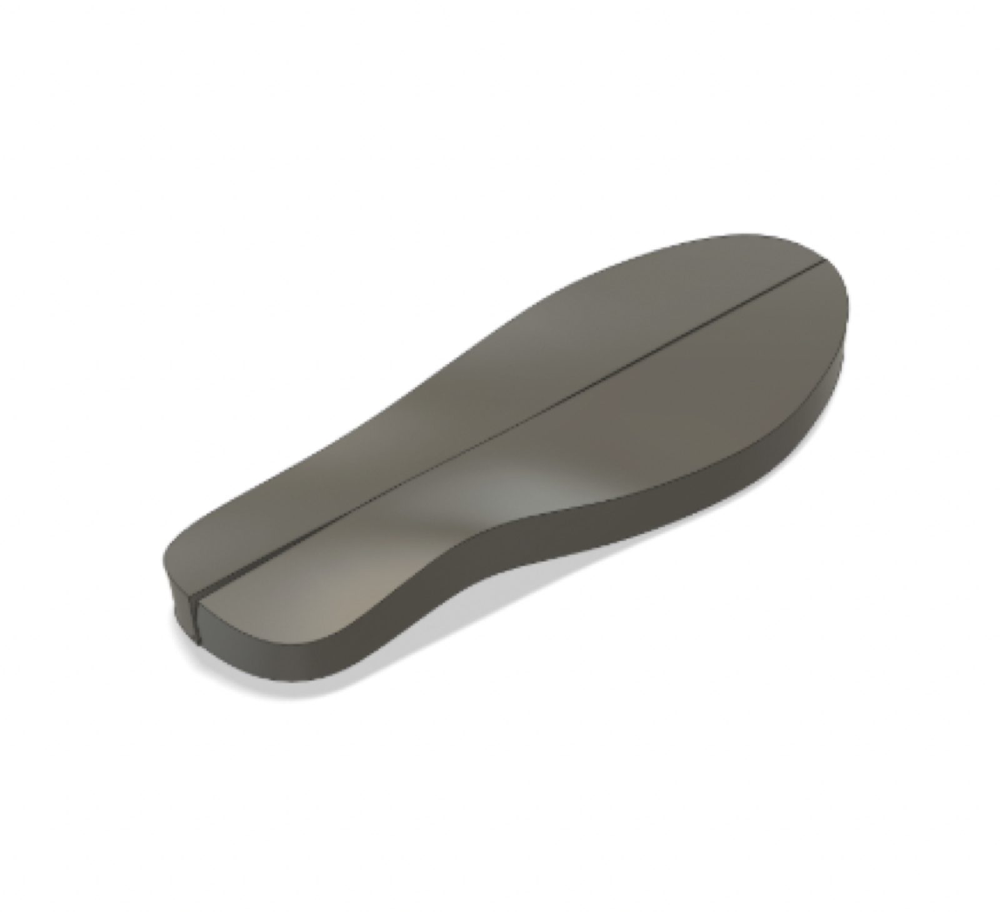
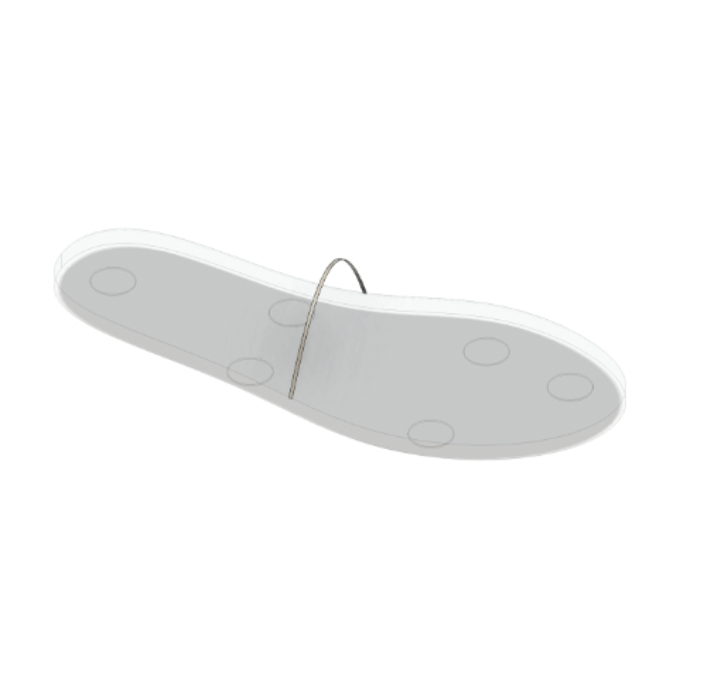
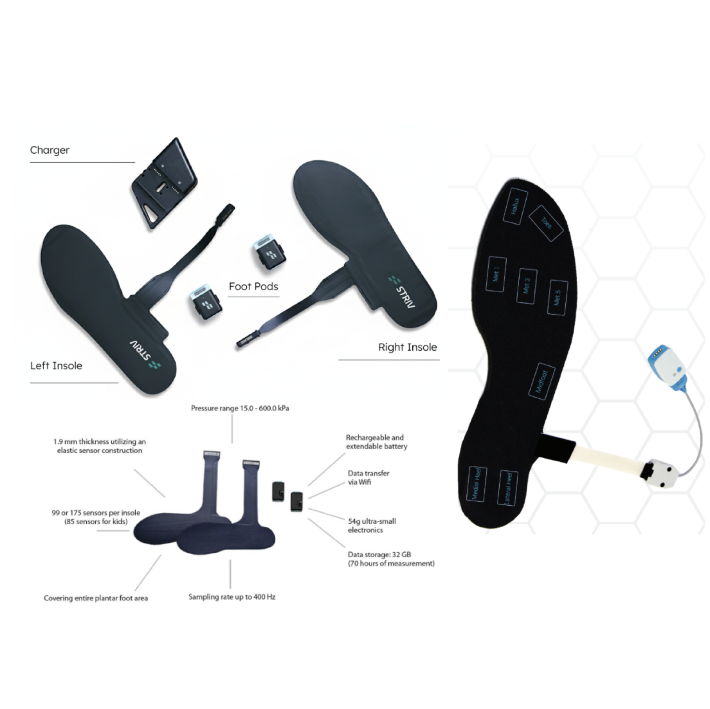

Smart Insoles Research Project
Completed an independent research project with Brown University Professor Joseph Crisco, working to design novel pressure sensing insoles for soccer players.
Problem
In sports, there is limited on-field gait analysis, as most analysis is conducted on treadmills in gyms or on tracking pads. I believe that to understand the causes of non-contact injuries, gait analysis must be performed on the field, since sharp turns and awkward cuts are difficult to reproduce in a lab setting. The goal of this work is to aid footwear designers in developing improved cleat support systems.
Solution
The idea I drafted was an insole with edge profiles that extend upward along the sides of the foot. The plan was to include 12 FlexiForce A201 pressure sensors on each insole. The sensors would be located at the hallux, the toes, the first, third, and fourth metatarsals, the midfoot, the medial and lateral heel, with an additional two sensors on either side of the foot to account for eversion and inversion ankle sprains. The sensors measure 9.3 mm in diameter and are calibrated and programmed using Arduino.
Process
This process consisted of design, research, and industry conversations. I networked with nearly a dozen footwear professionals, studied existing gait analysis research on PubMed, and drafted concepts using Fusion 360. The main inspirations for my designs were Striv, Novel Pedar Insoles, and Noraxon Instrumented Insoles. I also considered a design that wrapped a strain gauge over the top of the foot to measure changes in shear forces, but ultimately scrapped the idea as it seemed encumbering for athletes.
Lessons Learned
I am still in the process of advancing the project, but if I could go back, I would have moved into design iterations sooner. I encountered limitations due to a lack of funding for FlexiForce sensors, and by the end of the semester, even though I can continue working on the project, I would have liked to have produced more of a physical prototype.





